Nyzo version 512 (commit on GitHub) improves the new-verifier voting system. Instead of a single block hash, a new hash based on a full cycle is used as a lottery reference. This reduces the influence that any one verifier can have on the lottery. Also, timestamps are now linked solely to IP addresses, not identifiers, and a 30-day wait period is now enforced for any verifier wishing to join the lottery.
This version affects only the verifier. The sentinel does not vote for new verifiers.
In BlockManager, a private field and accessor method have been added for getting the frozen edge directly. Previously, a call such as BlockManager.frozenBlockForHeight(BlockManager.getFrozenEdgeHeight()) was necessary, and this could potentially return a null block due to the order in which frozenEdgeHeight is assigned and the block is added to the map.
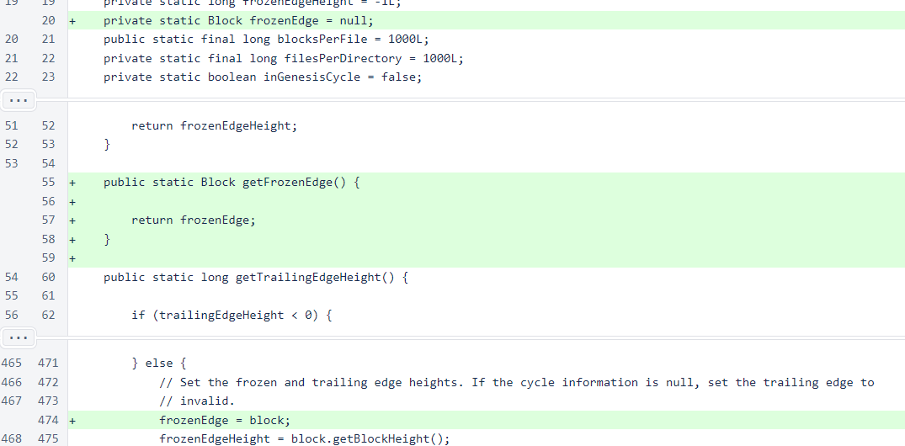In the Message class, NewVerifierVote21 has been added as a message that can be sent over UDP. This requires no other modifications, as these messages are smaller than block-vote messages.
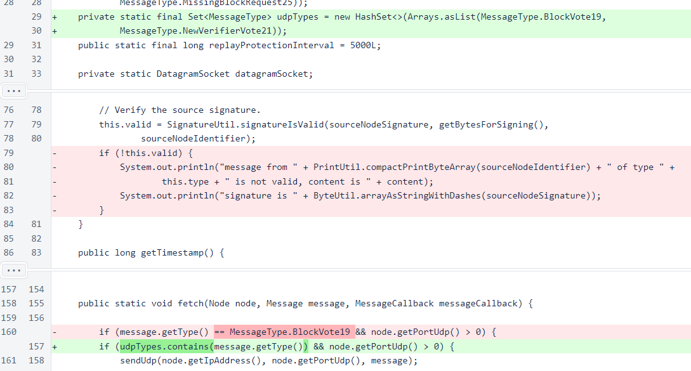In NewVerifierQueueManager, the constants for specifying the autovote method have been removed. The old FIFO method was not enabled often enough to justify leaving it in the code. Manual voting is still an option, however.
A constant has been added to specify the lottery wait time, and a field has been added to track the last reference height that was used for the lottery calculation. Keys have been added for storing the winning identifier and the reference height with the PersistentData class, and a check has been added to bypass the lottery calculation when the BlockManager has not yet been initialized, as this calculation will always fail in this case.
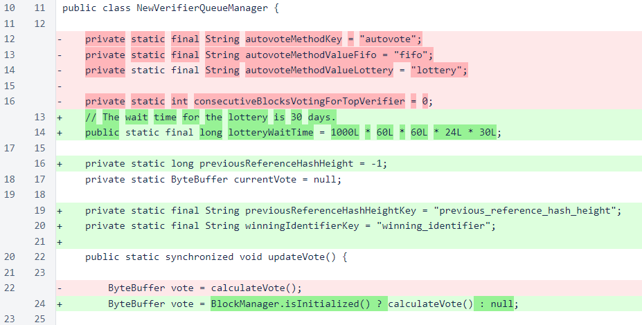Tracking the number of consecutive blocks voting for the top verifier is unnecessary with the lottery calculation.
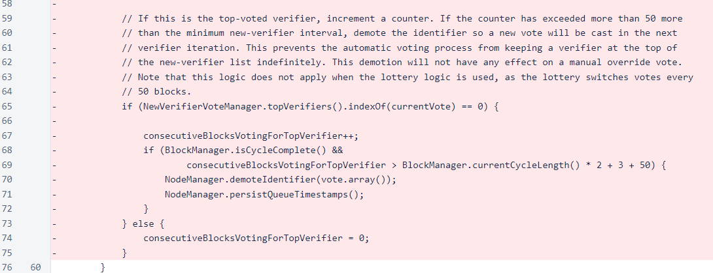In the calculateVote() method, the override is now checked first, and the lottery calculation is skipped if an override is provided.
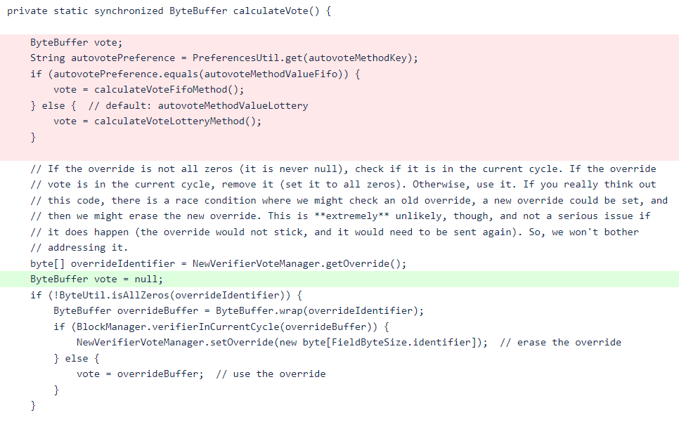 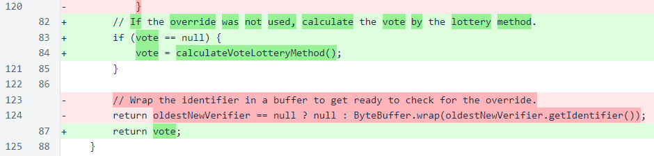The lottery calculation is almost identical to the previous lottery calculation. The primary change is use of a “cycle hash” instead of a block hash. Some checks have been added to avoid the calculation entirely or use the calculation from a previous running of the verifier, as the cycle hash is somewhat expensive to calculate, and it often cannot be calculated when the verifier has just started running.
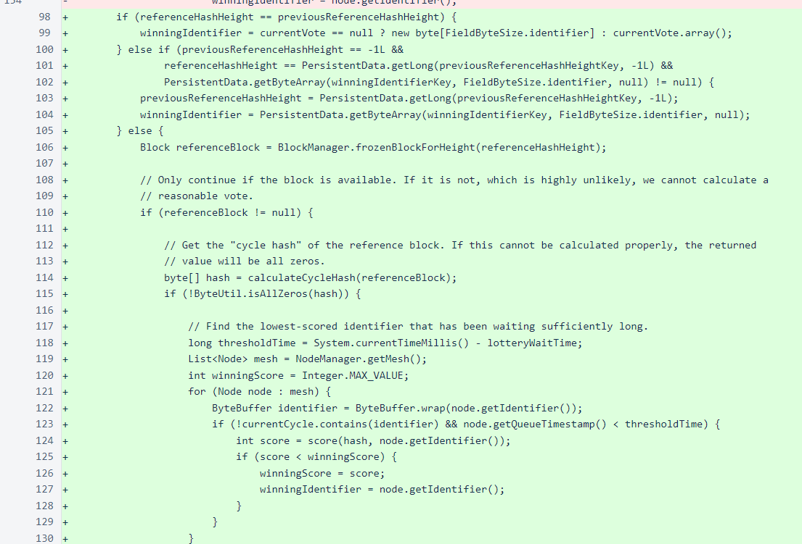If no verifiers have been waiting long enough to qualify for the lottery, the longest-waiting verifier is chosen as a fallback. When a vote is calculated, the height and the vote are both stored using the PersistentData class to make these calculations available across runs of the verifier.

The cycle hash is now used as the reference for the lottery. To provide a deterministic calculation based on blockchain data with sufficient entropy and minimal room for manipulation by each verifier, only the sign bit of the first byte of the hash from each block in the previous cycle is used to build a bit string. This bit string is then hashed to provide the scoring reference.
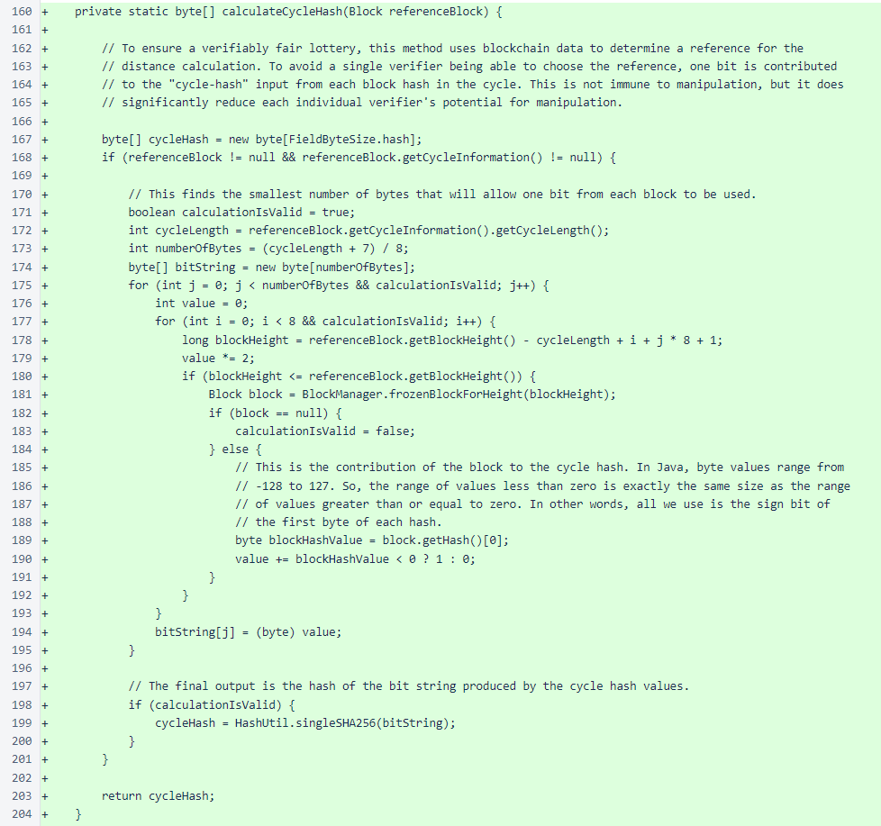The change from a 10-minute to a 30-day wait required substantial improvements to NodeManager to avoid various sources of vote scattering. Persistent storage of node timestamps based on identifier has been replaced with persistent storage of full node information based on IP address. The haveNodeHistory flag has been added so that new verifiers do not incorrectly timestamp all other nodes with current timestamps, which would exclude them from lottery calculations. This flag also enables a reasonable migration from the identifier-indexed timestamp system to the IP-indexed storage of full node information.
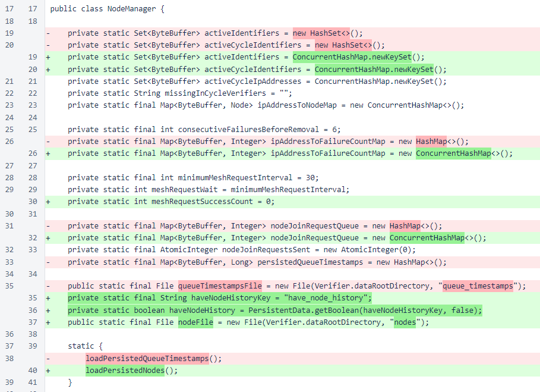When the haveNodeHistory flag is false, all new nodes are given a timestamp that enables immediate entry into the lottery.
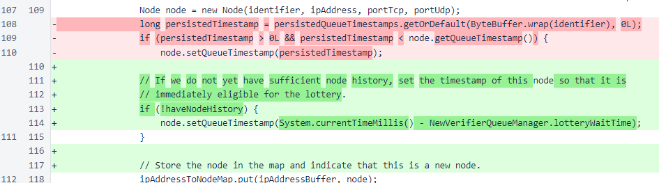After a few full cycles through the node-join queue, the haveNodeHistory flag is set to false. This value is stored with the PersistentData class, so once it is set to true, it will be true all subsequent times this verifier runs.
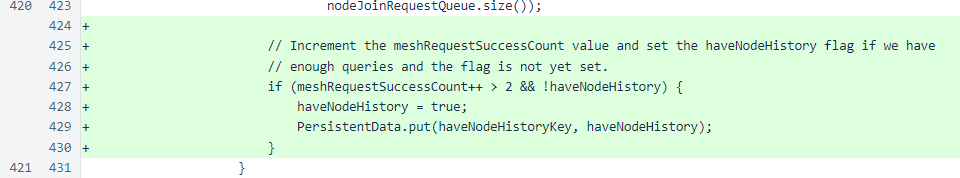The identifier/timestamp file has been replaced with a file containing all fields of each node.
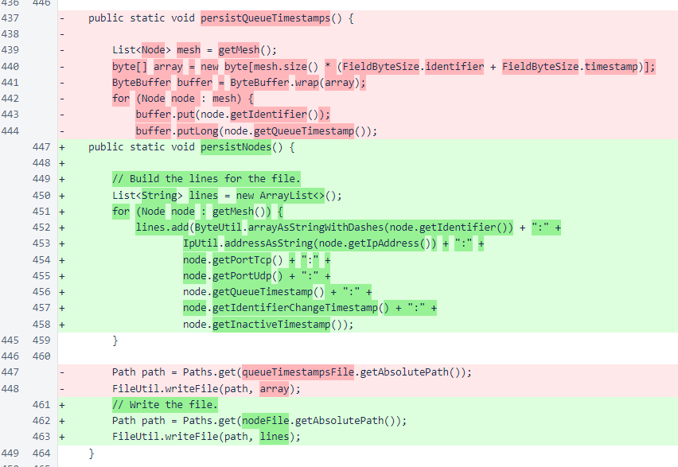When loading the node file, an intermediate map is no longer used. Nodes are added directly to ipAddressToNodeMap. This means that, when a verifier is restarted, it no longer needs to rebuild its node-manager map. Apart from information lost due to the the 100-block interval in writing the node file, the NodeManager class now restarts with essentially the same internal state that it had before a restart. This change will likely be leveraged in a future version to further streamline the verifier initialization process.
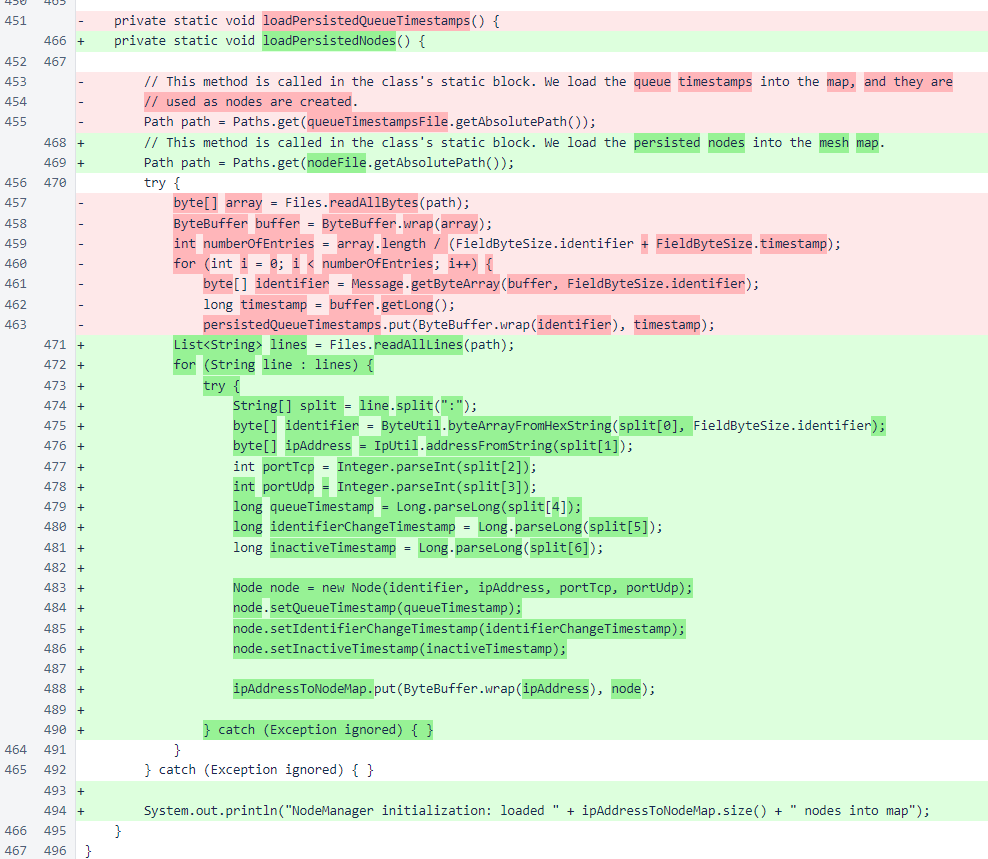The potential manipulation of the lottery due to the use of block hashes as a score reference was reported independently by two different members of the community. They will be rewarded ∩50,000 each. The transactions will be posted here.